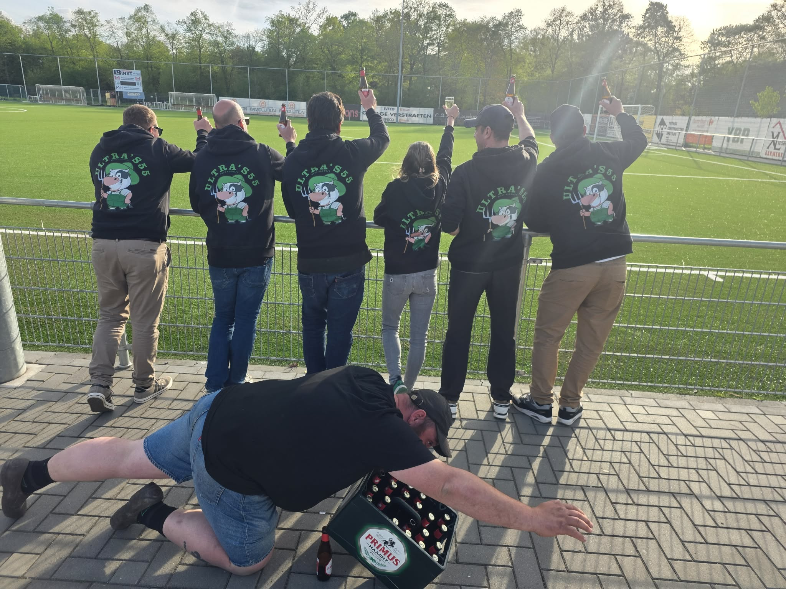

Three treatments of the locked terrace-poster register using your actual crowd shot. V1 & V2 put it full-bleed behind the hero (different scrims); V3 keeps a solid poster hero and uses the photo as a body TapedFigure instead. Headline copy is placeholder.

De naam KCVV Ultras werd enkele jaren geleden op Facebook in het leven geroepen…